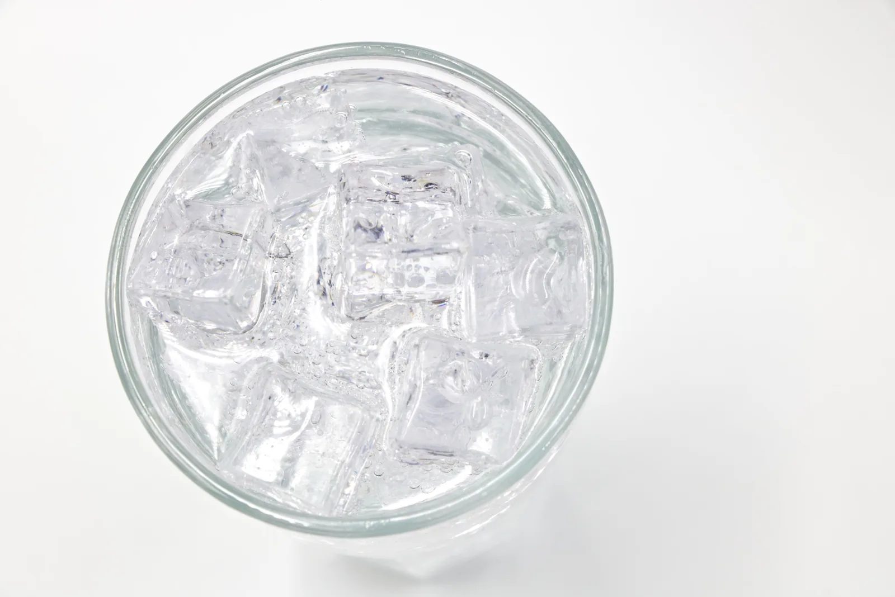

Thermal balance during a change of state
Why do ice cubes cool a drink so effectively, even though the ice itself is only at zero degrees? And why can some ice be left at the bottom of the glass, even though the drink was at room temperature?
Prior knowledge
- The quantity of heat needed to change a temperature is $Q = cm\Delta T$chapter Heating and cooling of a substance: $Q = cm\Delta T$
- In an insulated container, the quantity of heat given out by the hot object is equal to the quantity of heat taken in by the cold objectchapter Heating and cooling of a substance: $Q = cm\Delta T$
- During a change of state the temperature stays constant, and melting ice needs $Q = sm$chapter Changes of state
Core path: follow the steps in order. Tasks marked Optional give extra practice. Optional tasks: 7.
Think about it
On a summer day you drop a few ice cubes into a glass of juice at room temperature. The ice itself is only at 0 °C, but the juice cools quickly, much more than if you added the same amount of water at 0 °C. When the heat has evened out, there can still be ice floating at the bottom of the glass.
Why does ice at 0 °C cool a drink so much more effectively than water at 0 °C, and why does not all the ice always melt?
Optional Recap from the previous chapter
Predict
Make your predictions before investigating 2 questions
Prediction 1: does all the ice melt
Optional Prediction 2: cold freezer ice
Investigate
Drop ice into water in a calorimeter. The bars on the right show how much heat the water can give out and how much the ice needs to warm and melt.
Simulation
How to use
Adjust the mass and temperature of the water and the mass and temperature of the ice, and press Mix. The ice cubes drop into the water and melt; the figure shows the temperatures of the water and the ice and the mass of the ice. The orange bar is the quantity of heat given out by the water, the dark blue bar is the warming of the ice to $0\,{}^\circ\text{C}$ and the light blue bar is the melting of all the ice. The part of a bar that is higher than the orange bar is drawn faded: the water does not give out that heat as it cools to $0\,{}^\circ\text{C}$. If the faded part is melting, the corresponding ice is left unmelted. If part of the warming is faded, that heat is provided by freezing water. When you change any value, the ice rises out of the water and the experiment starts again. Speed changes only the pace of the animation, not the results. The thermometers show the state right now: when all the water has frozen, the water thermometer reads “froze”, and when all the ice has melted, the ice thermometer reads “none left” and the water thermometer shows the temperature of the mixed water. The final state tells you which of four cases applies: all the ice melts and the mixture is at $0\,{}^\circ\text{C}$ or above; the water is not enough to melt all the ice and the mixture is at $0\,{}^\circ\text{C}$; cold ice freezes some of the water and the mixture stays at $0\,{}^\circ\text{C}$; or all the water freezes and the mixture cools to below $0\,{}^\circ\text{C}$.
Assumptions of the model
The container is completely insulated: no heat is transferred to the surroundings or to the container, so the quantity of heat given out by the water is equal to the quantity taken in by the ice. The specific heat capacity of water is $4190\,\text{J/(kg}\cdot\text{K)}$, that of ice is $2100\,\text{J/(kg}\cdot\text{K)}$ and the specific latent heat of fusion of ice is $334\,\text{kJ/kg}$. Ice and water are present together only at a temperature of $0\,{}^\circ\text{C}$. The final state, the quantities of heat and the masses are values calculated by the model, not measurements. The speed of the approach (time constant $1.8\,\text{s}$) is only an illustration, not a physical model: in reality it depends on the stirring and the size of the ice cubes.
How the calculation works
The quantity of heat given out by the water as it cools to $0\,{}^\circ\text{C}$ is $Q_\text{w} = c_\text{w} m_\text{w} T_\text{w}$. The quantity of heat the ice needs is $c_\text{i} m_\text{i} \Delta T_\text{i}$ for warming and $s m_\text{i}$ for melting all the ice. If $Q_\text{w}$ is equal to their sum or greater, all the ice melts and
$$T = \frac{Q_\text{w} - c_\text{i} m_\text{i} \Delta T_\text{i} - s m_\text{i}}{c_\text{w} (m_\text{w} + m_\text{i})}$$
Otherwise some ice is left, the temperature is $0\,{}^\circ\text{C}$ and the mass of melted ice is $m_\text{melt} = \dfrac{Q_\text{w} - c_\text{i} m_\text{i} \Delta T_\text{i}}{s}$. If $Q_\text{w}$ is not enough to warm the ice, some of the water freezes; when all the water freezes, the temperature is found from the energy balance. The scale of the bars is 0–50, 0–100 or 0–$250\,\text{kJ}$: the smallest one that fits both bars.
Experiment 1: the temperature of the water changes
Test prediction 1. The mass of the water and the mass and temperature of the ice stay constant; change only the temperature of the water. Record the final temperature and the mass of the remaining ice for at least three temperatures, for example $10\,{}^\circ\text{C}$, $20\,{}^\circ\text{C}$ and $40\,{}^\circ\text{C}$. Press Mix in between and watch what happens to the ice.
Initial state: water mass = $0{.}3\,\text{kg}$, initial water temperature = 20 °C, ice mass = $0{.}1\,\text{kg}$, initial ice temperature = 0 °C. Kept constant: water mass, ice mass, initial ice temperature. Varied: initial water temperature.
| initial water temperature | $T$ (°C) | ice $(\text{g})$ |
|---|
Use the slider (step $0.5\,{}^\circ\text{C}$) to find the initial temperature of the water at which no ice is left but the final temperature does not yet exceed $0\,{}^\circ\text{C}$. Then calculate the exact temperature and answer in degrees Celsius.
Hint 1: a guiding question
Watch the mass of the ice that is left: make it smaller by raising the temperature, and find the point where it disappears.
Hint 2: what is the connection
At this temperature the quantity of heat given out by the water is equal to the quantity needed to melt all the ice: $c_\text{w} m_\text{w} T_\text{w} = s m_\text{i}$.
Show the solution
Given
water $m_\text{w} = 0.30\,\text{kg}$, ice $m_\text{i} = 0.10\,\text{kg}$, $T_\text{i} = 0\,{}^\circ\text{C}$; from the table $c_\text{w} = 4190\,\tfrac{\text{J}}{\text{kg}\cdot\text{K}}$ and $s = 334\,\tfrac{\text{kJ}}{\text{kg}}$. The limit found with the slider lies between $26.5\,{}^\circ\text{C}$ and $27.0\,{}^\circ\text{C}$.
Find
the initial temperature $T_\text{w}$ of the water at which all the ice just melts and the final state is $0\,{}^\circ\text{C}$, in degrees Celsius.
Principle
In an insulated container energy is conserved, so the heat given out by the water is equal to the heat taken in by the ice. In the limiting case no ice is left but the meltwater has not yet warmed either, so the final state is exactly $0\,{}^\circ\text{C}$ and all the heat given out by the water is used for melting. The ice is already at $0\,{}^\circ\text{C}$, so it does not need to be warmed.
Formula
$c_\text{w} m_\text{w} T_\text{w} = s m_\text{i}$, so
Conversions
The fall of the water $T_\text{w} - 0\,{}^\circ\text{C}$ is the same in kelvins and in degrees Celsius. The latent heat of fusion is $334\,\tfrac{\text{kJ}}{\text{kg}} = 334\,000\,\tfrac{\text{J}}{\text{kg}}$.
Substitution
Answer
$27\,{}^\circ\text{C}$
(exactly $26.57\,{}^\circ\text{C}$), two significant figures, because the masses $0.30\,\text{kg}$ and $0.10\,\text{kg}$ have two figures.
Reasonableness
The result is inside the interval $26.5\ldots 27.0\,{}^\circ\text{C}$ found with the slider. Estimate: melting needs $33.4\,\text{kJ}$ and three decilitres of water give out about $1.26\,\text{kJ}$ per kelvin, so $33.4 / 1.26 \approx 27\,\text{K}$. If the water were warmer, no ice would be left and the final state would be above $0\,{}^\circ\text{C}$.
Conclusion: when does all the ice melt?
Use your table. Write briefly what the final temperature was in the rows where ice was left, and why.
From what temperature on does all the ice melt, and how can you justify it with energy?
Model answer
When ice was left (for example $10\,{}^\circ\text{C}$: $62.4\,\text{g}$, $20\,{}^\circ\text{C}$: $24.7\,\text{g}$), the final temperature was always $0\,{}^\circ\text{C}$: ice and water are in equilibrium only at the melting point. Warmer water melted more ice, because it gave out more energy as it cooled to $0\,{}^\circ\text{C}$. All the ice melts when $c_\text{w} m_\text{w} T_\text{w} \geq s m_\text{i}$, that is when $T_\text{w} \geq 26.6\,{}^\circ\text{C}$. Above that the temperature rises above zero, for example from $40\,{}^\circ\text{C}$ to $10.1\,{}^\circ\text{C}$. The simulation calculates these from conservation of energy; in a real calorimeter some of the energy would go to the container and the surroundings.
Assess your own answer
Tick the points your own answer already contains.
Review the theory summary and practise with the exercises.
Optional Experiment 2: the temperature of the ice changes
Test prediction 2. The water ($0.30\,\text{kg}$, $25\,{}^\circ\text{C}$) and the mass of the ice ($0.10\,\text{kg}$) stay constant; change only the initial temperature of the ice. Record the mass of the remaining ice for at least two temperatures, for example $0\,{}^\circ\text{C}$ and $-20\,{}^\circ\text{C}$.
Initial state: water mass = $0{.}3\,\text{kg}$, initial water temperature = 25 °C, ice mass = $0{.}1\,\text{kg}$, initial ice temperature = 0 °C. Kept constant: water mass, initial water temperature, ice mass. Varied: initial ice temperature.
| initial ice temperature | $T$ (°C) | ice $(\text{g})$ |
|---|
How many grams more ice is left when the ice starts at $-20\,{}^\circ\text{C}$ compared with $0\,{}^\circ\text{C}$? If needed, record both measurements in the table. Answer in grams.
Hint 1: a guiding question
Compare the two masses of ice left in the table: one was measured at $0\,{}^\circ\text{C}$ and the other at $-20\,{}^\circ\text{C}$.
Hint 2: what is the connection
The difference is the ice whose melting heat was used to warm the ice: $\dfrac{c_\text{i} m_\text{i} \Delta T_\text{i}}{s}$.
Show the solution
Given
ice $m_\text{i} = 0.10\,\text{kg}$, initial temperatures $T_1 = 0\,{}^\circ\text{C}$ and $T_2 = -20\,{}^\circ\text{C}$; water $0.30\,\text{kg}$, $25\,{}^\circ\text{C}$ stays the same; from the table $c_\text{i} = 2100\,\tfrac{\text{J}}{\text{kg}\cdot\text{K}}$ and $s = 334\,\tfrac{\text{kJ}}{\text{kg}}$
Find
the increase $\Delta m$ in the mass of ice left, in grams, when the ice is at $-20\,{}^\circ\text{C}$ and not at $0\,{}^\circ\text{C}$.
Principle
In both experiments the water gives out the same heat. The cold ice uses part of it to warm to $0\,{}^\circ\text{C}$, and the final state is $0\,{}^\circ\text{C}$ because ice is left. That heat does not melt anything, so the mass of ice left unmelted grows by exactly the amount that corresponds to this quantity of heat.
Formula
The extra heat $Q = c_\text{i} m_\text{i} \Delta T_\text{i}$ does not melt ice, so $s\,\Delta m = c_\text{i} m_\text{i} \Delta T_\text{i}$, so
Conversions
The change in temperature
is the same in kelvins. The latent heat of fusion is $334\,\tfrac{\text{kJ}}{\text{kg}} = 334\,000\,\tfrac{\text{J}}{\text{kg}}$ and finally $1\,\text{kg} = 1000\,\text{g}$.
Substitution
Answer
$13\,\text{g}$
(exactly $12.6\,\text{g}$), two significant figures, because the mass of the ice $0.10\,\text{kg}$ and the change in temperature $20\,\text{K}$ have two figures; the simulation readings to a tenth of a gram do not add figures to the calculation.
Reasonableness
Warming the ice takes only $4.2\,\text{kJ}$, while melting $0.10\,\text{kg}$ of ice needs $33.4\,\text{kJ}$, so the effect is small: $4.2 / 334 \approx 0.013\,\text{kg}$. The increase is positive, because cold ice melts less.
Theory summary
Key idea
When warm water and ice are put in an insulated container, heat is transferred from the water to the ice until the temperatures are equal and the container is in thermal equilibrium. Energy is conserved, so the quantity of heat given out by the water is equal to the quantity of heat taken in by the ice. The energy taken in by the ice does not simply raise its temperature, however: the ice first warms to $0\,{}^\circ\text{C}$ and then melts. During melting the temperature stays constant, but every kilogram of ice takes in $334\,\text{kJ}$ of energy, and the same energy would raise the temperature of a kilogram of water by almost $80\,\text{K}$.
This is why the final temperature cannot be found as the mean of the initial temperatures. There are four possible end states. If the water can give out enough heat as it cools to melt all the ice, all the ice melts and the temperature of the mixture is at least $0\,{}^\circ\text{C}$: exactly $0\,{}^\circ\text{C}$ if the heat is only just enough, and otherwise above $0\,{}^\circ\text{C}$. If the heat is not enough, both ice and water are left in the container, and as long as both are present, the temperature is exactly $0\,{}^\circ\text{C}$. If the ice is very cold and there is little water, part or all of the water freezes; only when all the water has frozen is the temperature below $0\,{}^\circ\text{C}$. The solution always starts with the same comparison: calculate how much heat the water can give out and how much the ice needs to melt completely.
Thermal equilibrium and melting
An insulated container holds water of mass $m_\text{w}$ and temperature $T_\text{w} > 0\,{}^\circ\text{C}$, and ice of mass $m_\text{i}$ and temperature $T_\text{i} \le 0\,{}^\circ\text{C}$. We compare two quantities of heat: the one the water can give out as it cools to $0\,{}^\circ\text{C}$, and the one the ice needs to warm to $0\,{}^\circ\text{C}$ and melt completely:
$$\begin{aligned} Q_\text{w} &= c_\text{w} m_\text{w} T_\text{w} \\ Q_\text{i} &= c_\text{i} m_\text{i} \Delta T_\text{i} + s m_\text{i} \end{aligned}$$
where $Q_\text{w}$ is the quantity of heat given out by the water (J), $c_\text{w}$ is the specific heat capacity of water and $c_\text{i}$ that of ice (J/(kg·K)), $T_\text{w}$ is the temperature of the water in degrees Celsius (the same number as the temperature change to $0\,{}^\circ\text{C}$ in kelvins), $Q_\text{i}$ is the quantity of heat the ice needs (J), $\Delta T_\text{i} = 0\,{}^\circ\text{C} - T_\text{i}$ is the rise in the temperature of the ice (K) and $s$ is the specific latent heat of fusion of ice (J/kg). The first term warms the ice to $0\,{}^\circ\text{C}$ and the second melts it.
| Quantity | Value |
|---|---|
| of water $c_\text{w}$ | $4190\,\text{J/(kg}\cdot\text{K)}$ |
| of ice $c_\text{i}$ | $2100\,\text{J/(kg}\cdot\text{K)}$ |
| of ice $s$ | $334\,\text{kJ/kg}$ |
If $Q_\text{w} \ge Q_\text{i}$, all the ice melts. The heat given out by the water is then used to warm and melt the ice, and the rest warms the whole amount of water $m_\text{w} + m_\text{i}$ to the temperature $T$. The energy balance is
$$\begin{aligned} &c_\text{w} m_\text{w} (T_\text{w} - T) \\ \quad &= c_\text{i} m_\text{i} \Delta T_\text{i} + s m_\text{i} \\ &\qquad + c_\text{w} m_\text{i} T \end{aligned}$$
where the left-hand side is the quantity of heat given out by the water, and on the right are the warming of the ice, the melting of the ice and the warming of the meltwater. Solved:
$$T = \frac{Q_\text{w} - Q_\text{i}}{c_\text{w} (m_\text{w} + m_\text{i})}$$
In the borderline case $Q_\text{w} = Q_\text{i}$ the formula gives $T = 0\,{}^\circ\text{C}$: all the ice has only just melted, but the meltwater does not warm up.
If $Q_\text{w} < Q_\text{i}$ but the water is enough to warm the ice to $0\,{}^\circ\text{C}$, not all the ice has time to melt. The container then holds ice and water at the same time, so $T = 0\,{}^\circ\text{C}$. The mass of melted ice $m_\text{melt}$ is found from the heat that is left after warming the ice:
$$m_\text{melt} = \frac{Q_\text{w} - c_\text{i} m_\text{i} \Delta T_\text{i}}{s}$$
The mass of ice that is left is $m_\text{i} - m_\text{melt}$. The graph shows how the final temperature depends on the initial temperature of the water when there is $0.30\,\text{kg}$ of water and $0.10\,\text{kg}$ of ice at 0 °C: until the heat given out by the water is enough to melt the ice, the temperature stays at $0\,{}^\circ\text{C}$, and after that it rises. The black dot is the glass of the first figure, where the water is at 20 °C.
If $Q_\text{w}$ is not enough even to warm the ice to $0\,{}^\circ\text{C}$, the cold ice freezes some of the water. As long as some water is left, ice and water are present together and the temperature is $0\,{}^\circ\text{C}$. Only if all the water freezes does the mass of ice cool to below $0\,{}^\circ\text{C}$; its temperature is found from the same energy balance in the Level 3 exercise.

Common misconception
Many people calculate the final temperature as if the ice were just cold water, which forgets the latent heat of fusion. When $0.30\,\text{kg}$ of water ($20\,{}^\circ\text{C}$) and $0.10\,\text{kg}$ of ice ($0\,{}^\circ\text{C}$) are mixed, this method would give
$$\begin{aligned} T &= \frac{c_\text{w} m_\text{w} T_\text{w} + c_\text{w} m_\text{i} T_\text{i}}{c_\text{w} (m_\text{w} + m_\text{i})} \\ &= \frac{0.30\,\text{kg} \cdot 20\,{}^\circ\text{C}}{0.40\,\text{kg}} \\ &= 15\,{}^\circ\text{C} \end{aligned}$$
In reality, melting all the ice would need $33.4\,\text{kJ}$, but the water can give out only $25.1\,\text{kJ}$ as it cools. So the final state is $0\,{}^\circ\text{C}$, and $24.7\,\text{g}$ of ice is left over. Another mistake is to put the temperature below $0\,{}^\circ\text{C}$ when the container still holds ice and water: as long as both are present, the temperature is $0\,{}^\circ\text{C}$. If your calculation gives a temperature below $0\,{}^\circ\text{C}$ with a formula that assumes all the ice melts, the assumption is wrong: some ice is left, and the temperature is $0\,{}^\circ\text{C}$. The exception is very cold ice that freezes all the water: then the container holds only ice, and its temperature is below $0\,{}^\circ\text{C}$.
Summary
- In an insulated container, the quantity of heat given out by the water is equal to the quantity of heat taken in by the ice. The ice first warms to $0\,{}^\circ\text{C}$ and then melts; during melting the temperature does not change.
- First compare the quantities of heat $Q_\text{w} = c_\text{w} m_\text{w} T_\text{w}$ and $Q_\text{i} = c_\text{i} m_\text{i} \Delta T_\text{i} + s m_\text{i}$. If $Q_\text{w} \ge Q_\text{i}$, all the ice melts and $T = \tfrac{Q_\text{w} - Q_\text{i}}{c_\text{w}(m_\text{w} + m_\text{i})}$; in the borderline case $Q_\text{w} = Q_\text{i}$ the temperature is exactly $0\,{}^\circ\text{C}$.
- If $Q_\text{w} < Q_\text{i}$, some ice is left and the temperature is $0\,{}^\circ\text{C}$. The mass of melted ice is $m_\text{melt} = \tfrac{Q_\text{w} - c_\text{i} m_\text{i} \Delta T_\text{i}}{s}$. Exception: if the ice is so cold that all the water freezes, the temperature is below $0\,{}^\circ\text{C}$.
- The specific latent heat of fusion of water is $334\,\text{kJ/kg}$: melting one kilogram of ice needs the same energy as warming a kilogram of water by almost $80\,\text{K}$.
- The final temperature is not the mean of the initial temperatures, and when ice and water are together in the same container in equilibrium at normal pressure, the temperature is $0\,{}^\circ\text{C}$.
Optional Return to your predictions
Compare your predictions with the values of the model in the experiments and with the formulas. Then return to the opening question: why do ice cubes cool a drink more effectively than the same mass of water at 0 °C? Use the figures $334\,\text{kJ/kg}$ and $4.19\,\text{kJ/(kg}\cdot\text{K)}$, and say when all the ice melts.
Would you change your prediction?
Apply
Worked example
Problem
A calorimeter contains $0.250\,\text{kg}$ of water at a temperature of $24.0\,{}^\circ\text{C}$. $0.050\,\text{kg}$ of ice at $-8.0\,{}^\circ\text{C}$ is dropped into the water. Does all the ice melt, and what is the temperature of the contents of the calorimeter at thermal equilibrium? The heat capacity of the calorimeter itself and heat losses to the surroundings are ignored.
Step 1/7
Given and find. Water: $m_\text{w} = 0.250\,\text{kg}$, $T_\text{w} = 24.0\,{}^\circ\text{C}$. Ice: $m_\text{i} = 0.050\,\text{kg}$, $T_\text{i} = -8.0\,{}^\circ\text{C}$. From the table, $c_\text{w} = 4190\,\tfrac{\text{J}}{\text{kg}\cdot\text{K}}$, $c_\text{i} = 2100\,\tfrac{\text{J}}{\text{kg}\cdot\text{K}}$ and $s = 334\,\tfrac{\text{kJ}}{\text{kg}}$. We are asked whether all the ice melts, and for the final temperature $T$.
Step 2/7
Principle. Energy is conserved, because the calorimeter takes in no heat and no heat escapes to the surroundings: the quantity of heat given out by the water is equal to the quantity of heat taken in by the ice. The ice first warms to $0\,{}^\circ\text{C}$, then melts at a constant temperature, and finally the meltwater warms to the final temperature. So we must first check whether the heat given out by the water is enough to warm and melt all the ice. If it is, the ice melts completely and the final temperature is not below $0\,{}^\circ\text{C}$.
Step 3/7
Rearranged formula. When the water cools to $0\,{}^\circ\text{C}$ it gives out a quantity of heat $Q_\text{w}$, and to melt, the ice needs a quantity of heat $Q_\text{i}$. When $Q_\text{w} > Q_\text{i}$, the surplus warms all the water ($m_\text{w} + m_\text{i}$) to the temperature $T$:
$$\begin{aligned} Q_\text{w} &= c_\text{w} m_\text{w} T_\text{w} \\ Q_\text{i} &= c_\text{i} m_\text{i} \Delta T_\text{i} + s m_\text{i} \\[6pt] T &= \frac{Q_\text{w} - Q_\text{i}}{c_\text{w} (m_\text{w} + m_\text{i})} \end{aligned}$$
Step 4/7
Unit conversions. The masses are already in kilograms. A temperature change is the same in kelvins and in degrees Celsius: the water cools by $24.0\,{}^\circ\text{C} - 0\,{}^\circ\text{C} = 24.0\,\text{K}$ and the ice warms by
The latent heat of fusion is $334\,\tfrac{\text{kJ}}{\text{kg}} = 334\,000\,\tfrac{\text{J}}{\text{kg}}$.
Step 5/7
Substitution. We calculate the quantities of heat separately and then the temperature:
$$\begin{aligned} Q_\text{w} &= c_\text{w} m_\text{w} T_\text{w} \\ &= 4190\,\tfrac{\text{J}}{\text{kg}\cdot\text{K}} \cdot 0.250\,\text{kg} \cdot 24.0\,\text{K} \\ &= 25\,140\,\text{J} \\[6pt] Q_\text{i} &= c_\text{i} m_\text{i} \Delta T_\text{i} + s m_\text{i} \\ &= 2100\,\tfrac{\text{J}}{\text{kg}\cdot\text{K}} \cdot 0.050\,\text{kg} \cdot 8.0\,\text{K} \\ &\quad + 334\,000\,\tfrac{\text{J}}{\text{kg}} \cdot 0.050\,\text{kg} \\ &= 840\,\text{J} + 16\,700\,\text{J} \\ &= 17\,540\,\text{J} \\[6pt] T &= \frac{Q_\text{w} - Q_\text{i}}{c_\text{w} (m_\text{w} + m_\text{i})} \\ &= \frac{25\,140\,\text{J} - 17\,540\,\text{J}}{4190\,\tfrac{\text{J}}{\text{kg}\cdot\text{K}} \cdot 0.300\,\text{kg}} \\ &= \frac{7600\,\text{J}}{1257\,\tfrac{\text{J}}{\text{K}}} \\ &= 6.05\,{}^\circ\text{C} \end{aligned}$$
Step 6/7
Result. Because
all the ice melts. The final state is $0.300\,\text{kg}$ of water at a temperature of $6.0\,{}^\circ\text{C}$. The answer is given to two significant figures, because the mass of the ice, $0.050\,\text{kg}$, is known only to two figures and it determines the precision of the quantity of heat $Q_\text{i} = 17\,540\,\text{J}$ (hundreds of joules); the difference $Q_\text{w} - Q_\text{i} = 7600\,\text{J}$ is therefore a two-figure number.
Step 7/7
Reasonableness. The result lies between the initial temperatures $-8.0\,{}^\circ\text{C}$ and $24.0\,{}^\circ\text{C}$, but below $8.0\,{}^\circ\text{C}$, the midpoint of the two, even though there is five times as much water: the melting of the ice pulls the result down. If the latent heat were forgotten, the result would be about $19\,{}^\circ\text{C}$, so melting takes two thirds of the heat given out by the water ($16.7\,\text{kJ}$ of $25.1\,\text{kJ}$). The energy balance checks out: the water gives out a total of $4190 \cdot 0.250 \cdot (24.0 - 6.05) \approx 18.8\,\text{kJ}$ and the ice takes in $840 + 16\,700 + 4190 \cdot 0.050 \cdot 6.05 \approx 18.8\,\text{kJ}$. Try the same values in the simulation.
Optional Find the error
Optional Apply to a new situation
Lemonade of mass $0.250\,\text{kg}$ and temperature $22.0\,{}^\circ\text{C}$ is to be cooled to $8.0\,{}^\circ\text{C}$ by dropping in ice at a temperature of $0\,{}^\circ\text{C}$.
How many grams of ice are needed, when all the ice melts and the specific heat capacity of the lemonade is the same as that of water? No heat is assumed to be transferred to the surroundings. Answer in grams.
Hint 1: a guiding question
What is all the heat taken in by the ice used for? Remember that the ice first melts and the meltwater then warms to the final temperature.
Hint 2: what is the connection
The heat given out by the lemonade is equal to the melting of the ice and the warming of the meltwater: $c\, m_\text{l} (T_\text{l} - T) = s m_\text{i} + c\, m_\text{i} T$.
Hint 3: an intermediate step
Solve
and substitute: the numerator is $4190 \cdot 0.250 \cdot 14.0\,\text{J}$ and the denominator $334\,000 + 4190 \cdot 8.0$ J/kg.
Show the solution
Given
lemonade $m_\text{l} = 0.250\,\text{kg}$, $T_\text{l} = 22.0\,{}^\circ\text{C}$, final temperature $T = 8.0\,{}^\circ\text{C}$, ice $T_\text{i} = 0\,{}^\circ\text{C}$; from the table $c = 4190\,\tfrac{\text{J}}{\text{kg}\cdot\text{K}}$ (for lemonade and water) and $s = 334\,\tfrac{\text{kJ}}{\text{kg}}$
Find
the mass $m_\text{i}$ of ice needed, in grams.
Principle
No heat is transferred to the surroundings, so energy is conserved: the heat given out by the lemonade is equal to the heat taken in by the ice. All the ice melts and the final temperature is above $0\,{}^\circ\text{C}$, so the ice melts first and the meltwater then warms from $0\,{}^\circ\text{C}$ to the temperature $T$. The ice is already at $0\,{}^\circ\text{C}$, so it does not need to be warmed.
Formula
The energy balance is
$$c\, m_\text{l} (T_\text{l} - T) = s m_\text{i} + c\, m_\text{i} T$$
so
$$m_\text{i} = \frac{c\, m_\text{l} (T_\text{l} - T)}{s + c\, T}$$
Conversions
The fall of the lemonade
is the same in kelvins, and so is the rise of the meltwater $T - 0\,{}^\circ\text{C} = 8.0\,\text{K}$. The latent heat of fusion is $334\,\tfrac{\text{kJ}}{\text{kg}} = 334\,000\,\tfrac{\text{J}}{\text{kg}}$ and finally $1\,\text{kg} = 1000\,\text{g}$.
Substitution
Answer
$39.9\,\text{g}$
Three significant figures, because the mass $0.250\,\text{kg}$ and the temperature difference $22.0\,{}^\circ\text{C} - 8.0\,{}^\circ\text{C} = 14.0\,\text{K}$ have three figures; the warming term in the denominator, $4190 \cdot 8.0 = 33\,520\,\tfrac{\text{J}}{\text{kg}}$, is added to the latent heat of fusion $334\,000$, so it affects only the thousands place of the third figure.
Reasonableness
Estimate: the lemonade gives out about $4 \cdot 0.25 \cdot 14 \approx 14\,\text{kJ}$ and one gram of ice takes in about $0.37\,\text{kJ}$ as it melts and warms, so $14 / 0.37 \approx 38\,\text{g}$. About three ice cubes are enough to cool a quarter of a litre by $14\,\text{K}$, which fits experience. Melting alone, without the warming of the meltwater, would give $43.9\,\text{g}$, which is too much.
Check your understanding
Exit ticket
Answer on your own first and only then open the answer.
- How much heat is needed to melt $0.20\,\text{kg}$ of ice at $0\,{}^\circ\text{C}$ ($s = 334\,\text{kJ/kg}$)?
Answer
$Q$$= sm$$= 334\,\tfrac{\text{kJ}}{\text{kg}} \cdot 0.20\,\text{kg}$$= 66.8\,\text{kJ}$$\approx 67\,\text{kJ}$The temperature does not change during melting.
- Mix $0.10\,\text{kg}$ of water ($10\,{}^\circ\text{C}$) and $0.10\,\text{kg}$ of ice ($0\,{}^\circ\text{C}$). Does all the ice melt? Justify with numbers.
Answer
No. As it cools to $0\,{}^\circ\text{C}$ the water can give out
$Q$$= cm\Delta T$$= 4190\,\tfrac{\text{J}}{\text{kg}\cdot\text{K}} \cdot 0.10\,\text{kg} \cdot 10\,\text{K}$$\approx 4.2\,\text{kJ}$but melting all the ice needs
$sm$$= 334\,\tfrac{\text{kJ}}{\text{kg}} \cdot 0.10\,\text{kg}$$= 33.4\,\text{kJ}$Only about $12.5\,\text{g}$ melts, and the temperature is $0\,{}^\circ\text{C}$.
1. Concept
2. A cold piece of ice in water
3. Calculation
A calorimeter contains $0.20\,\text{kg}$ of tea at a temperature of $70\,{}^\circ\text{C}$, with the same specific heat capacity as water. $0.050\,\text{kg}$ of ice at a temperature of $0\,{}^\circ\text{C}$ is dropped into the tea.
What is the temperature when all the ice has melted and thermal equilibrium has been reached? Answer in degrees Celsius.
Hint 1: a guiding question
First compare whether the heat given out by the tea is enough to melt all the ice. How much can the tea give out as it cools to $0\,{}^\circ\text{C}$?
Hint 2: what is the connection
If the ice melts completely,
when the ice starts at $0\,{}^\circ\text{C}$.
Hint 3: an intermediate step
Show the solution
Given
tea $m_\text{w} = 0.20\,\text{kg}$, $T_\text{w} = 70\,{}^\circ\text{C}$, ice $m_\text{i} = 0.050\,\text{kg}$, $T_\text{i} = 0\,{}^\circ\text{C}$; from the table $c_\text{w} = 4190\,\tfrac{\text{J}}{\text{kg}\cdot\text{K}}$ (tea is like water) and $s = 334\,\tfrac{\text{kJ}}{\text{kg}}$
Find
the final temperature $T$ in degrees Celsius.
Principle
The calorimeter is insulated, so energy is conserved: the heat given out by the tea is equal to the heat used to melt the ice and warm the meltwater. The ice is already at $0\,{}^\circ\text{C}$, so it does not warm before melting. We must check that all the ice melts: the tea must be able to give out at least $s m_\text{i}$.
Formula
$Q_\text{w} = c_\text{w} m_\text{w} T_\text{w}$ is the heat the tea gives out as it cools to $0\,{}^\circ\text{C}$. If $Q_\text{w} \ge s m_\text{i}$, all the ice melts and the surplus warms the whole liquid (in the case of equality $T = 0\,{}^\circ\text{C}$):
$$T = \frac{Q_\text{w} - s m_\text{i}}{c_\text{w} (m_\text{w} + m_\text{i})}$$
Conversions
The fall of the tea $70\,{}^\circ\text{C} - 0\,{}^\circ\text{C} = 70\,\text{K}$ is the same in kelvins. The latent heat of fusion is $334\,\tfrac{\text{kJ}}{\text{kg}} = 334\,000\,\tfrac{\text{J}}{\text{kg}}$.
Substitution
Because $58\,660 > 16\,700$, the assumption that all the ice melts holds.
Answer
$40\,{}^\circ\text{C}$
Two significant figures like the mass $0.20\,\text{kg}$ and the temperature $70\,{}^\circ\text{C}$.
Reasonableness
The result is between $0\,{}^\circ\text{C}$ and $70\,{}^\circ\text{C}$, and because the ice is only a quarter of the mass of the tea, the result is closer to $70\,{}^\circ\text{C}$ than to $0\,{}^\circ\text{C}$. Without the latent heat the result would be
so melting lowers the temperature by about $16\,\text{K}$. Energy balance: the tea gives out $4190 \cdot 0.20 \cdot 30\,\text{J} \approx 25.1\,\text{kJ}$ and the ice takes in
Suggestion: one answer does not show everything you can do, but review the theory summary and do the core exercises.
Optional 4. Explain and transfer
Ice cubes are used to cool a drink. Explain why ice at 0 °C cools a drink much more effectively than the same mass of water at 0 °C, and why ice can be left in the glass even though the drink is at room temperature.
Model answer
Melting ice takes in $334\,\text{kJ}$ of energy per kilogram, even though the temperature does not change. The same energy would raise the temperature of a kilogram of water by almost $80\,\text{K}$, so melting ice takes in much more heat than the same mass of water at 0 °C, which would take in heat only by warming up. According to conservation of energy, the drink gives out exactly the heat that the ice takes in as it melts and as the meltwater warms. If the heat given out by the drink is not enough to melt all the ice, some ice is left and the contents of the glass are at exactly $0\,{}^\circ\text{C}$.
Assess your own answer
Tick the points your own answer already contains.
Review the theory summary and practise with the exercises.
Review the chapter's concepts
Cards you mark Review later collect in your review deck.
- Melting
- A solid turns into a liquid and takes in energy.
Exercises
Level 1 · basic practice 5 exercises
One formula or one step of reasoning. Core exercises first, the rest is extra practice.
- Exercise 9-1Core
A $0.050\,\text{kg}$ piece of ice at $0\,{}^\circ\text{C}$ is dropped into a fruit drink. The ice melts completely into water at $0\,{}^\circ\text{C}$.
How much heat does the ice take in as it melts? Give the answer in kilojoules.
Answer
$17\,\text{kJ}$
Show the solution
Given
ice, $m = 0.050\,\text{kg}$, temperature $0\,{}^\circ\text{C}$; from the table $s = 334\,\tfrac{\text{kJ}}{\text{kg}}$
Find
the quantity of heat $Q$ needed to melt the ice, in kilojoules
Principle
The ice is already at its melting temperature and melts completely into water that is also at $0\,{}^\circ\text{C}$. The temperature does not change, so the heat is used only for the change of state, and the latent heat of fusion is proportional to the mass.
Formula
$Q = s m$, so the quantity to find is directly $Q = s m$
Conversions
The result is wanted in kilojoules and $s$ is already in kilojoules per kilogram, so no conversion is needed.
Substitution
$Q$$= 334\,\tfrac{\text{kJ}}{\text{kg}} \cdot 0.050\,\text{kg}$$= 16.7\,\text{kJ}$Answer
$17\,\text{kJ}$
Two significant figures like the mass $0.050\,\text{kg}$.
Reasonableness
A kilogram of ice needs $334\,\text{kJ}$, and the mass is one twentieth of a kilogram, so $334\,\text{kJ} / 20 \approx 17\,\text{kJ}$. $Q$ is positive, because the ice takes in heat. The formula has no temperature change, because the temperature stays constant.
- Exercise 9-2Core
A freezer contains $0.25\,\text{kg}$ of water at $0\,{}^\circ\text{C}$. The water freezes completely into ice at $0\,{}^\circ\text{C}$.
How much heat does the water give out as it freezes? Give the answer in kilojoules.
Answer
$84\,\text{kJ}$
Show the solution
Given
water, $m = 0.25\,\text{kg}$, temperature $0\,{}^\circ\text{C}$; from the table $s = 334\,\tfrac{\text{kJ}}{\text{kg}}$
Find
the quantity of heat $Q$ released on freezing, in kilojoules
Principle
The water freezes completely into ice at $0\,{}^\circ\text{C}$, so the temperature does not change. Freezing is the opposite of melting: the water gives out the same quantity of heat $s m$ that the same mass of ice would take in when melting.
Formula
$Q = s m$, so the quantity to find is directly $Q = s m$
Conversions
$s$ is already in kilojoules per kilogram and the answer is wanted in kilojoules, so no conversion is needed.
Substitution
$Q$$= 334\,\tfrac{\text{kJ}}{\text{kg}} \cdot 0.25\,\text{kg}$$= 83.5\,\text{kJ}$Answer
$84\,\text{kJ}$
Two significant figures like the mass $0.25\,\text{kg}$.
Reasonableness
A quarter of a kilogram of water gives out a quarter of $334\,\text{kJ}$, that is about $334\,\text{kJ} / 4 \approx 84\,\text{kJ}$. The same mass of ice would need exactly the same quantity of heat when melting, so the freezer must remove $84\,\text{kJ}$ even though the temperature of the water does not fall.
- Exercise 9-3
Ice taken from the freezer is added to water in an insulated container. The bars of the graph show three quantities of heat for this mixture: the heat the water can give out as it cools to $0\,{}^\circ\text{C}$, the heat needed to warm the ice to $0\,{}^\circ\text{C}$, and the heat that melting all the ice would need. No heat is transferred to the container or the surroundings. First work out from the graph whether all the ice melts.
How many grams of ice melt before thermal equilibrium? Give the answer in grams.
Answer
$60\,\text{g}$
Show the solution
Given
from the graph, the heat given out by the water as it cools to $0\,{}^\circ\text{C}$ is $Q_\text{w} = 25\,\text{kJ}$, the heat needed to warm the ice to $0\,{}^\circ\text{C}$ is $c_\text{i} m_\text{i} \Delta T_\text{i} = 5\,\text{kJ}$ and the heat needed to melt all the ice is $s m_\text{i} = 60\,\text{kJ}$; from the table $s = 334\,\tfrac{\text{kJ}}{\text{kg}}$
Find
the mass $m_\text{melt}$ of ice that melts, in grams
Principle
Energy is conserved in the insulated container: the heat given out by the water first warms the ice to $0\,{}^\circ\text{C}$, and the rest melts ice. Because $5\,\text{kJ} \le 25\,\text{kJ} < 5\,\text{kJ} + 60\,\text{kJ}$, the water is enough to warm the ice but not to melt all of it. Some ice is left, and the final temperature is $0\,{}^\circ\text{C}$.
Reading the graph
The grid spacing is $5\,\text{kJ}$. The top bar ends at the line halfway between the numbers $20$ and $30$, that is at $25\,\text{kJ}$, the middle one at the first line, that is at $5\,\text{kJ}$, and the bottom one at the number $60$.
Formula
$m_\text{melt}$$= \dfrac{Q_\text{w} - c_\text{i} m_\text{i} \Delta T_\text{i}}{s}$Conversions
The quantities of heat and the latent heat are in kilojoules, so kJ cancels. Finally $1\,\text{kg} = 1000\,\text{g}$.
Substitution
$m_\text{melt}$$= \dfrac{25\,\text{kJ} - 5\,\text{kJ}}{334\,\tfrac{\text{kJ}}{\text{kg}}}$$= \dfrac{20\,\text{kJ}}{334\,\tfrac{\text{kJ}}{\text{kg}}}$$= 0.05988\,\text{kg}$$= 59.88\,\text{g}$Answer
$60\,\text{g}$
Two significant figures, because the difference $25\,\text{kJ} - 5\,\text{kJ} = 20\,\text{kJ}$ read from the graph is known to two figures.
Reasonableness
$20\,\text{kJ}$ is left for melting, which is a third of the $60\,\text{kJ}$ that melting all the ice would need, so about a third of the ice melts. Energy balance: the water gives out $25\,\text{kJ}$, and the ice takes in
$5\,\text{kJ} + 0.05988\,\text{kg} \cdot 334\,\tfrac{\text{kJ}}{\text{kg}}$$= 25\,\text{kJ}$ - Exercise 9-4
Ice at $0\,{}^\circ\text{C}$ is melted with a heater that transfers $60\,\text{kJ}$ of heat to the ice.
How many grams of ice have time to melt, when all the heat is used for melting? Give the answer in grams.
Answer
$180\,\text{g}$
Show the solution
Given
ice at a temperature of $0\,{}^\circ\text{C}$, transferred quantity of heat $Q = 60\,\text{kJ}$; from the table $s = 334\,\tfrac{\text{kJ}}{\text{kg}}$
Find
the mass $m$ of ice that melts, in grams
Principle
The ice is already at the melting temperature and all the heat is used for melting, so the temperature does not change and no energy goes into warming. The mass that melts is proportional to the quantity of heat.
Formula
$Q = s m$, so $m = \dfrac{Q}{s}$
Conversions
Both $Q$ and $s$ are in kilojoules, so the kilojoules cancel and the mass comes out in kilograms. Finally $1\,\text{kg} = 1000\,\text{g}$.
Substitution
$m$$= \dfrac{60\,\text{kJ}}{334\,\tfrac{\text{kJ}}{\text{kg}}}$$= 0.17964\,\text{kg}$$= 179.64\,\text{g}$Answer
$180\,\text{g}$
Two significant figures like the quantity of heat $60\,\text{kJ}$.
Reasonableness
$60\,\text{kJ}$ is about a fifth of $334\,\text{kJ}$, so about a fifth of a kilogram melts, that is about $200\,\text{g}$. The result $180\,\text{g}$ is slightly smaller than this, as it should be.
- Exercise 9-5
A $0.20\,\text{kg}$ bag of ice at $-12\,{}^\circ\text{C}$ is taken from the freezer.
How much heat must be transferred to the ice for its temperature to rise to $0\,{}^\circ\text{C}$ without the ice yet starting to melt? Give the answer in kilojoules.
Answer
$5.0\,\text{kJ}$
Show the solution
Given
ice, $m = 0.20\,\text{kg}$, $T_\text{initial} = -12\,{}^\circ\text{C}$, $T_\text{final} = 0\,{}^\circ\text{C}$; from the table $c_\text{i} = 2100\,\tfrac{\text{J}}{\text{kg}\cdot\text{K}}$
Find
the quantity of heat $Q$ needed for the warming, in kilojoules
Principle
The ice only warms to $0\,{}^\circ\text{C}$ and does not start to melt yet, so the latent heat is not needed. The quantity of heat is proportional to the mass and to the change in temperature, and the specific heat capacity is that of ice.
Formula
$Q = c_\text{i} m \Delta T$, where $\Delta T = T_\text{final} - T_\text{initial}$, so the quantity to find is directly $Q = c_\text{i} m \Delta T$
Conversions
The change in temperature is the same in degrees Celsius and in kelvins:
$\Delta T$$= 0\,{}^\circ\text{C} - (-12\,{}^\circ\text{C})$$= 12\,\text{K}$Finally $1\,\text{kJ} = 1000\,\text{J}$.
Substitution
$Q$$= 2100\,\tfrac{\text{J}}{\text{kg}\cdot\text{K}} \cdot 0.20\,\text{kg} \cdot 12\,\text{K}$$= 5040\,\text{J}$$= 5.04\,\text{kJ}$Answer
$5.0\,\text{kJ}$
Two significant figures, because the mass $0.20\,\text{kg}$ and the temperature change $0\,{}^\circ\text{C} - (-12\,{}^\circ\text{C}) = 12\,\text{K}$ have two figures.
Reasonableness
Estimate:
$2\,\tfrac{\text{kJ}}{\text{kg}\cdot\text{K}} \cdot 0.2\,\text{kg} \cdot 12\,\text{K}$$\approx 5\,\text{kJ}$Melting the same ice would need $334\,\tfrac{\text{kJ}}{\text{kg}} \cdot 0.20\,\text{kg} = 66.8\,\text{kJ}$, so the warming is only about one thirteenth of the energy needed for melting.
Level 2 · applied practice 4 exercises
Two steps, working with measured data, a unit conversion or rearranging a formula. Core exercises first, the rest is extra practice.
- Exercise 9-6Core
A calorimeter contains $0.35\,\text{kg}$ of water at $30\,{}^\circ\text{C}$. $0.060\,\text{kg}$ of ice at $0\,{}^\circ\text{C}$ is dropped into the water.
What is the temperature of the contents of the calorimeter when thermal equilibrium has been reached and all the ice has melted? Assume that no heat is transferred to the calorimeter or the surroundings.
Answer
$14\,{}^\circ\text{C}$
Show the solution
Given
water $m_\text{w} = 0.35\,\text{kg}$, $T_\text{w} = 30\,{}^\circ\text{C}$; ice $m_\text{i} = 0.060\,\text{kg}$, $T_\text{i} = 0\,{}^\circ\text{C}$; from the table $c_\text{w} = 4190\,\tfrac{\text{J}}{\text{kg}\cdot\text{K}}$ and $s = 334\,\tfrac{\text{kJ}}{\text{kg}}$
Find
the final temperature $T$ in degrees Celsius
Principle
In an insulated calorimeter energy is conserved: the heat given out by the water is equal to the heat taken in by the ice. The ice is already at $0\,{}^\circ\text{C}$, so it does not warm before melting. The problem says that all the ice melts, and this must be checked by comparing the quantities of heat.
Formula
When the water cools to $0\,{}^\circ\text{C}$ it gives out a quantity of heat $Q_\text{w} = c_\text{w} m_\text{w} T_\text{w}$. If $Q_\text{w} > s m_\text{i}$, the surplus warms the whole amount of water: $Q_\text{w} - s m_\text{i} = c_\text{w} (m_\text{w} + m_\text{i}) T$, so
$T$$= \dfrac{Q_\text{w} - s m_\text{i}}{c_\text{w} (m_\text{w} + m_\text{i})}$Conversions
Measured from $0\,{}^\circ\text{C}$, the temperature is the same in kelvins and in degrees Celsius, so $T_\text{w} = 30\,{}^\circ\text{C}$ corresponds to a fall of $30\,\text{K}$. The latent heat of fusion is $334\,\tfrac{\text{kJ}}{\text{kg}} = 334\,000\,\tfrac{\text{J}}{\text{kg}}$.
Substitution
$Q_\text{w}$$= 4190 \cdot 0.35 \cdot 30\,\text{J}$$= 43\,995\,\text{J}$$s m_\text{i}$$= 334\,000 \cdot 0.060\,\text{J}$$= 20\,040\,\text{J}$Because $43\,995 > 20\,040$, all the ice melts.
$T$$= \dfrac{43\,995\,\text{J} - 20\,040\,\text{J}}{4190\,\tfrac{\text{J}}{\text{kg}\cdot\text{K}} \cdot 0.41\,\text{kg}}$$= \dfrac{23\,955\,\text{J}}{1717.9\,\tfrac{\text{J}}{\text{K}}}$$= 13.94\,{}^\circ\text{C}$Answer
$14\,{}^\circ\text{C}$
Two significant figures, because the mass of the water $0.35\,\text{kg}$, its temperature $30\,{}^\circ\text{C}$ and the mass of the ice $0.060\,\text{kg}$ all have two figures; the difference of the quantities of heat $43\,995 - 20\,040$ does not add figures.
Reasonableness
The result is between $0\,{}^\circ\text{C}$ and $30\,{}^\circ\text{C}$. Without the latent heat the result would be
$\dfrac{0.35 \cdot 30}{0.41}$$\approx 26\,{}^\circ\text{C}$so melting takes almost half of the heat given out by the water. Energy balance: the water gives out $4190 \cdot 0.35 \cdot (30 - 13.944)\,\text{J} \approx 23.55\,\text{kJ}$ and the ice takes in
$20\,040\,\text{J} + 4190 \cdot 0.060 \cdot 13.944\,\text{J}$$\approx 23.55\,\text{kJ}$so the balances agree.
- Exercise 9-7Core
Ice at $0\,{}^\circ\text{C}$ taken from the fridge is used to cool $0.30\,\text{kg}$ of water from $18\,{}^\circ\text{C}$ to $0\,{}^\circ\text{C}$.
How many grams of ice must melt? Assume that no heat is transferred to the surroundings. Give the answer in grams.
Answer
$68\,\text{g}$
Show the solution
Given
water $m_\text{w} = 0.30\,\text{kg}$, $T_\text{initial} = 18\,{}^\circ\text{C}$, $T_\text{final} = 0\,{}^\circ\text{C}$; ice at $0\,{}^\circ\text{C}$; from the table $c_\text{w} = 4190\,\tfrac{\text{J}}{\text{kg}\cdot\text{K}}$ and $s = 334\,\tfrac{\text{kJ}}{\text{kg}}$
Find
the mass $m_\text{i}$ of ice that melts, in grams
Principle
No heat escapes to the surroundings, so all the heat given out by the water is used to melt the ice. The ice is already at $0\,{}^\circ\text{C}$ and the meltwater does not need to be warmed, because the final state is $0\,{}^\circ\text{C}$.
Formula
$c_\text{w} m_\text{w} \Delta T = s m_\text{i}$, so
$m_\text{i}$$= \dfrac{c_\text{w} m_\text{w} \Delta T}{s}$Conversions
The fall in temperature is the same in kelvins:
$\Delta T$$= 18\,{}^\circ\text{C} - 0\,{}^\circ\text{C}$$= 18\,\text{K}$The latent heat of fusion is $334\,\tfrac{\text{kJ}}{\text{kg}} = 334\,000\,\tfrac{\text{J}}{\text{kg}}$ and finally $1\,\text{kg} = 1000\,\text{g}$.
Substitution
$m_\text{i}$$= \dfrac{4190\,\tfrac{\text{J}}{\text{kg}\cdot\text{K}} \cdot 0.30\,\text{kg} \cdot 18\,\text{K}}{334\,000\,\tfrac{\text{J}}{\text{kg}}}$$= \dfrac{22\,626\,\text{J}}{334\,000\,\tfrac{\text{J}}{\text{kg}}}$$= 0.06774\,\text{kg}$$= 67.74\,\text{g}$Answer
$68\,\text{g}$
Two significant figures, because the mass $0.30\,\text{kg}$ and the temperature change $18\,{}^\circ\text{C} - 0\,{}^\circ\text{C} = 18\,\text{K}$ have two figures.
Reasonableness
Estimate: the water gives out about $4 \cdot 0.3 \cdot 18 \approx 22\,\text{kJ}$, and $22\,\text{kJ} / 334\,\tfrac{\text{kJ}}{\text{kg}} \approx 0.066\,\text{kg}$. About $68\,\text{g}$ is two or three ice cubes, which is little compared with the amount of water, because melting takes a lot of energy.
- Exercise 9-8
Ice of mass $0.40\,\text{kg}$ and temperature $-10\,{}^\circ\text{C}$ is heated with an $800\,\text{W}$ heater until all the ice has melted into water at $0\,{}^\circ\text{C}$. Assume that all the power of the heater is transferred to the ice.
How long does the heating take? Give the answer in seconds.
Answer
$180\,\text{s}$
Show the solution
Given
ice $m = 0.40\,\text{kg}$, $T_\text{initial} = -10\,{}^\circ\text{C}$, finally water at $0\,{}^\circ\text{C}$; power $P = 800\,\text{W}$; from the table $c_\text{i} = 2100\,\tfrac{\text{J}}{\text{kg}\cdot\text{K}}$ and $s = 334\,\tfrac{\text{kJ}}{\text{kg}}$
Find
the heating time $t$ in seconds
Principle
All the power is transferred to the ice, so power times time is the energy transferred to the ice. The ice first warms to $0\,{}^\circ\text{C}$ and then melts at a constant temperature, so both the warming and the latent heat of fusion are needed.
Formula
$P t = c_\text{i} m \Delta T + s m$, so
$t$$= \dfrac{c_\text{i} m \Delta T + s m}{P}$Conversions
The change in temperature
$\Delta T$$= 0\,{}^\circ\text{C} - (-10\,{}^\circ\text{C})$$= 10\,\text{K}$is the same in kelvins. The latent heat of fusion is $334\,\tfrac{\text{kJ}}{\text{kg}} = 334\,000\,\tfrac{\text{J}}{\text{kg}}$, and $1\,\text{W} = 1\,\tfrac{\text{J}}{\text{s}}$, so the time comes out in seconds.
Substitution
Warming the ice takes
$2100\,\tfrac{\text{J}}{\text{kg}\cdot\text{K}} \cdot 0.40\,\text{kg} \cdot 10\,\text{K}$$= 8400\,\text{J}$and melting it takes
$334\,000\,\tfrac{\text{J}}{\text{kg}} \cdot 0.40\,\text{kg}$$= 133\,600\,\text{J}$so
$$\begin{aligned} t &= \dfrac{8400\,\text{J} + 133\,600\,\text{J}}{800\,\tfrac{\text{J}}{\text{s}}} \\ &= 177.5\,\text{s} \end{aligned}$$
Answer
$180\,\text{s}$
Two significant figures, because the mass $0.40\,\text{kg}$ and the temperature change $10\,\text{K}$ have two figures; the power and the table values do not limit the precision further.
Reasonableness
Warming the ice takes only $8400 / 142\,000 \approx 6\,\%$ of the total energy, and the rest is used for melting. Estimate:
$0.4\,\text{kg} \cdot 334\,\tfrac{\text{kJ}}{\text{kg}}$$\approx 134\,\text{kJ}$$134\,\text{kJ} / 0.8\,\tfrac{\text{kJ}}{\text{s}} \approx 170\,\text{s}$. About three minutes is a sensible time for a device the size of a kettle.
- Exercise 9-9
The latent heat of fusion of ice is measured with a calorimeter. The calorimeter contains $0.200\,\text{kg}$ of water at $30.0\,{}^\circ\text{C}$. $0.0500\,\text{kg}$ of ice at $0\,{}^\circ\text{C}$ is dropped into the water. When the ice has melted completely, the measured temperature is $8.1\,{}^\circ\text{C}$. Determine the specific latent heat of fusion of ice. The heat capacity of the calorimeter itself and heat losses are ignored. Give the answer in kJ/kg.
Answer
$333\,\tfrac{\text{kJ}}{\text{kg}}$
Show the solution
Given
water $m_\text{w} = 0.200\,\text{kg}$, $T_\text{w} = 30.0\,{}^\circ\text{C}$; ice $m_\text{i} = 0.0500\,\text{kg}$, $T_\text{i} = 0\,{}^\circ\text{C}$; final state $T = 8.1\,{}^\circ\text{C}$; from the table $c_\text{w} = 4190\,\tfrac{\text{J}}{\text{kg}\cdot\text{K}}$
Find
the specific latent heat of fusion $s$ of ice in $\tfrac{\text{kJ}}{\text{kg}}$
Principle
The calorimeter is insulated and its own heat capacity is ignored, so energy is conserved: the heat given out by the water is equal to the heat used to melt the ice and to warm the meltwater. The ice is already at $0\,{}^\circ\text{C}$, so it does not warm before melting.
Formula
$c_\text{w} m_\text{w} (T_\text{w} - T)$$= s m_\text{i} + c_\text{w} m_\text{i} T$so
$s$$= \dfrac{c_\text{w} \left[ m_\text{w} (T_\text{w} - T) - m_\text{i} T \right]}{m_\text{i}}$Conversions
The temperature differences are the same in kelvins:
$T_\text{w} - T$$= 30.0 - 8.1$$= 21.9\,\text{K}$$T - 0 = 8.1\,\text{K}$. Finally $1\,\text{kJ} = 1000\,\text{J}$.
Substitution
The expression in the square brackets is
$0.200\,\text{kg} \cdot 21.9\,\text{K} - 0.0500\,\text{kg} \cdot 8.1\,\text{K}$$= 4.380\,\text{kg}\cdot\text{K} - 0.405\,\text{kg}\cdot\text{K}$$= 3.975\,\text{kg}\cdot\text{K}$so
$$\begin{aligned} s &= \dfrac{4190\,\tfrac{\text{J}}{\text{kg}\cdot\text{K}} \cdot 3.975\,\text{kg}\cdot\text{K}}{0.0500\,\text{kg}} \\ &= 333\,105\,\tfrac{\text{J}}{\text{kg}} \\ &= 333.1\,\tfrac{\text{kJ}}{\text{kg}} \end{aligned}$$
Answer
$333\,\tfrac{\text{kJ}}{\text{kg}}$
Three significant figures, because the mass of the ice $0.0500\,\text{kg}$, the mass of the water $0.200\,\text{kg}$ and the temperature difference $30.0\,{}^\circ\text{C} - 8.1\,{}^\circ\text{C} = 21.9\,\text{K}$ have three figures.
Reasonableness
The result is close to the table value $334\,\tfrac{\text{kJ}}{\text{kg}}$ (a difference of less than $0.3\,\%$). The small difference is already within the limits of the reading precision of the temperature ($0.1\,\text{K}$), and in a real experiment the heat capacity of the calorimeter and heat losses would also have an effect: a reading of $8.0\,{}^\circ\text{C}$ would give about $335\,\tfrac{\text{kJ}}{\text{kg}}$. The result is positive, as a latent heat of fusion should be.
Level 3 · challenging 3 exercises
Optional: application, two ideas together or a new situation where you reason for yourself.
- Exercise 9-10
A thermos jug contains $0.600\,\text{kg}$ of water at $35.0\,{}^\circ\text{C}$. Ice taken from the freezer at $-20\,{}^\circ\text{C}$ is to be added to the water. The amount of ice is chosen so that the ice melts exactly completely and the temperature of the mixture becomes $0\,{}^\circ\text{C}$.
How many grams of ice are needed? Give the answer in grams.
Answer
$234\,\text{g}$
Show the solution
Given
water $m_\text{w} = 0.600\,\text{kg}$, $T_\text{w} = 35.0\,{}^\circ\text{C}$; ice $T_\text{i} = -20\,{}^\circ\text{C}$; final state $0\,{}^\circ\text{C}$ with all the ice just melted; from the table $c_\text{w} = 4190\,\tfrac{\text{J}}{\text{kg}\cdot\text{K}}$, $c_\text{i} = 2100\,\tfrac{\text{J}}{\text{kg}\cdot\text{K}}$ and $s = 334\,\tfrac{\text{kJ}}{\text{kg}}$
Find
the mass $m_\text{i}$ of the ice in grams
Principle
Energy is conserved in the insulated container. This is a limiting case: the final state is exactly $0\,{}^\circ\text{C}$ and the ice has just melted, so the meltwater is not warmed and all the heat given out by the water is used to warm the ice to $0\,{}^\circ\text{C}$ and to melt it.
Formula
$c_\text{w} m_\text{w} T_\text{w}$$= c_\text{i} m_\text{i} \Delta T_\text{i} + s m_\text{i}$so
$m_\text{i}$$= \dfrac{c_\text{w} m_\text{w} T_\text{w}}{c_\text{i} \Delta T_\text{i} + s}$Conversions
The temperature differences are the same in kelvins: the water falls by $35\,\text{K}$ and the ice rises by
$\Delta T_\text{i}$$= 0 - (-20)$$= 20\,\text{K}$The latent heat of fusion is $334\,\tfrac{\text{kJ}}{\text{kg}} = 334\,000\,\tfrac{\text{J}}{\text{kg}}$ and finally $1\,\text{kg} = 1000\,\text{g}$.
Substitution
$m_\text{i}$$= \dfrac{4190 \cdot 0.600 \cdot 35.0\,\text{J}}{2100 \cdot 20\,\tfrac{\text{J}}{\text{kg}} + 334\,000\,\tfrac{\text{J}}{\text{kg}}}$$= \dfrac{87\,990\,\text{J}}{376\,000\,\tfrac{\text{J}}{\text{kg}}}$$= 0.23401\,\text{kg}$$= 234.0\,\text{g}$Answer
$234\,\text{g}$
Three significant figures, because the mass of the water $0.600\,\text{kg}$ and its temperature $35.0\,{}^\circ\text{C}$ have three figures; the sum in the denominator $42\,000 + 334\,000 = 376\,000\,\tfrac{\text{J}}{\text{kg}}$ is precise to thousands, that is also to three figures.
Reasonableness
If there were more ice, some of it would be left unmelted and the temperature would be $0\,{}^\circ\text{C}$. If there were less, all of it would melt and the temperature would be above $0\,{}^\circ\text{C}$. Energy balance: the water gives out $87\,990\,\text{J}$ and the ice takes in $0.234 \cdot (42\,000 + 334\,000)\,\text{J} \approx 88\,000\,\text{J}$. Warming the ice takes $42\,\tfrac{\text{kJ}}{\text{kg}}$ and melting it $334\,\tfrac{\text{kJ}}{\text{kg}}$, so the warming is only about one eighth.
- Exercise 9-11
An insulated container holds $0.200\,\text{kg}$ of water at $15.0\,{}^\circ\text{C}$. $0.300\,\text{kg}$ of ice at $-10.0\,{}^\circ\text{C}$ is added to the water.
How many grams of ice are left in the container when thermal equilibrium has been reached? First check whether all the ice melts. Give the answer in grams.
Answer
$281\,\text{g}$
Show the solution
Given
water $m_\text{w} = 0.200\,\text{kg}$, $T_\text{w} = 15.0\,{}^\circ\text{C}$; ice $m_\text{i} = 0.300\,\text{kg}$, $T_\text{i} = -10.0\,{}^\circ\text{C}$; from the table $c_\text{w} = 4190\,\tfrac{\text{J}}{\text{kg}\cdot\text{K}}$, $c_\text{i} = 2100\,\tfrac{\text{J}}{\text{kg}\cdot\text{K}}$ and $s = 334\,\tfrac{\text{kJ}}{\text{kg}}$
Find
the mass $m_\text{i} - m_\text{melt}$ of the ice that is left, in grams
Principle
Energy is conserved in the insulated container. First the final state must be found by comparing: the ice first warms to $0\,{}^\circ\text{C}$ and only then melts, and as long as ice and water are present together, the temperature is $0\,{}^\circ\text{C}$. We check by comparing the heat given out by the water with the quantities of heat needed to warm and melt the ice.
Formula
$m_\text{melt}$$= \dfrac{Q_\text{w} - c_\text{i} m_\text{i} \Delta T_\text{i}}{s}$when
$c_\text{i} m_\text{i} \Delta T_\text{i}$$\le Q_\text{w}$$< c_\text{i} m_\text{i} \Delta T_\text{i} + s m_\text{i}$the mass left is $m_\text{i} - m_\text{melt}$
Conversions
The temperature differences are the same in kelvins: the water falls by $15\,\text{K}$ and the ice rises by $\Delta T_\text{i} = 10\,\text{K}$. The latent heat of fusion is $334\,\tfrac{\text{kJ}}{\text{kg}} = 334\,000\,\tfrac{\text{J}}{\text{kg}}$ and finally $1\,\text{kg} = 1000\,\text{g}$.
Substitution
$Q_\text{w}$$= 4190 \cdot 0.200 \cdot 15.0\,\text{J}$$= 12\,570\,\text{J}$$c_\text{i} m_\text{i} \Delta T_\text{i}$$= 2100 \cdot 0.300 \cdot 10.0\,\text{J}$$= 6300\,\text{J}$$s m_\text{i} = 100\,200\,\text{J}$. The water is enough to warm the ice but not to melt all of it, so $T = 0\,{}^\circ\text{C}$.
$m_\text{melt}$$= \dfrac{12\,570\,\text{J} - 6300\,\text{J}}{334\,000\,\tfrac{\text{J}}{\text{kg}}}$$= 0.018772\,\text{kg}$so the ice left is
$0.300\,\text{kg} - 0.018772\,\text{kg}$$= 0.28123\,\text{kg}$$= 281.2\,\text{g}$Answer
$281\,\text{g}$
Three significant figures, because the masses $0.200\,\text{kg}$ and $0.300\,\text{kg}$ and the temperatures $15.0\,{}^\circ\text{C}$ and $-10.0\,{}^\circ\text{C}$ have three figures; the subtraction $0.300 - 0.0188$ gives the result to the nearest gram.
Reasonableness
There is little water and the ice is cold, so almost all the ice survives. Only $19\,\text{g}$ melts, and the final state is $0\,{}^\circ\text{C}$. Energy balance: the water gives out $12\,570\,\text{J}$ and the ice takes in $6300\,\text{J} + 334\,000 \cdot 0.018772\,\text{J} = 12\,570\,\text{J}$.
- Exercise 9-12
An insulated container holds $0.100\,\text{kg}$ of water at $10.0\,{}^\circ\text{C}$. $0.500\,\text{kg}$ of ice at $-40.0\,{}^\circ\text{C}$ is added to the water.
What is the temperature of the contents of the container when thermal equilibrium has been reached? First work out whether all the water freezes. Give the answer in degrees Celsius.
Answer
$-3.5\,{}^\circ\text{C}$
Show the solution
Given
water $m_\text{w} = 0.100\,\text{kg}$, $T_\text{w} = 10.0\,{}^\circ\text{C}$; ice $m_\text{i} = 0.500\,\text{kg}$, $T_\text{i} = -40.0\,{}^\circ\text{C}$; from the table $c_\text{w} = 4190\,\tfrac{\text{J}}{\text{kg}\cdot\text{K}}$, $c_\text{i} = 2100\,\tfrac{\text{J}}{\text{kg}\cdot\text{K}}$ and $s = 334\,\tfrac{\text{kJ}}{\text{kg}}$
Find
the final temperature $T$ in degrees Celsius
Principle
Energy is conserved in the insulated container. The water can give out at most the heat released when it cools to $0\,{}^\circ\text{C}$ and freezes. If this is less than the heat needed to warm the ice to $0\,{}^\circ\text{C}$, all the water freezes and the whole content becomes ice at a temperature below $0\,{}^\circ\text{C}$.
Formula
If all the water freezes, the water gives out three quantities of heat: it cools to $0\,{}^\circ\text{C}$ ($c_\text{w} m_\text{w} T_\text{w}$), it freezes ($s m_\text{w}$) and the ice formed cools further to the temperature $T$ ($c_\text{i} m_\text{w} (0 - T)$). The original ice takes in, when it warms from the temperature $T_\text{i}$ to the temperature $T$, a quantity of heat $c_\text{i} m_\text{i} (T - T_\text{i})$. Conservation of energy:
$c_\text{w} m_\text{w} T_\text{w} + s m_\text{w} - c_\text{i} m_\text{w} T$$= c_\text{i} m_\text{i} T - c_\text{i} m_\text{i} T_\text{i}$Moving the terms that contain $T$ to the right:
$c_\text{w} m_\text{w} T_\text{w} + s m_\text{w} + c_\text{i} m_\text{i} T_\text{i}$$= c_\text{i} (m_\text{i} + m_\text{w}) T$so
$T$$= \dfrac{c_\text{w} m_\text{w} T_\text{w} + s m_\text{w} + c_\text{i} m_\text{i} T_\text{i}}{c_\text{i} (m_\text{i} + m_\text{w})}$Conversions
The temperature differences are the same in kelvins: the water falls by $10\,\text{K}$ and the ice rises by $0 - (-40) = 40\,\text{K}$. The latent heat of fusion is $334\,\tfrac{\text{kJ}}{\text{kg}} = 334\,000\,\tfrac{\text{J}}{\text{kg}}$.
Substitution
The water can give out at most
$4190 \cdot 0.100 \cdot 10.0\,\text{J} + 334\,000 \cdot 0.100\,\text{J}$$= 37\,590\,\text{J}$but warming the ice to $0\,{}^\circ\text{C}$ needs $2100 \cdot 0.500 \cdot 40.0\,\text{J} = 42\,000\,\text{J}$, so all the water freezes.
The terms in the numerator are $4190\,\text{J}$, $33\,400\,\text{J}$ and $2100 \cdot 0.500 \cdot (-40.0)\,\text{J} = -42\,000\,\text{J}$, and the denominator is
$2100\,\tfrac{\text{J}}{\text{kg}\cdot\text{K}} \cdot 0.600\,\text{kg}$$= 1260\,\tfrac{\text{J}}{\text{K}}$so
$$\begin{aligned} T &= \dfrac{4190\,\text{J} + 33\,400\,\text{J} - 42\,000\,\text{J}}{1260\,\tfrac{\text{J}}{\text{K}}} \\ &= \dfrac{-4410\,\text{J}}{1260\,\tfrac{\text{J}}{\text{K}}} \\ &= -3.5\,{}^\circ\text{C} \end{aligned}$$
Answer
$-3.5\,{}^\circ\text{C}$
Two significant figures, because the difference in the numerator $37\,590 - 42\,000 = -4410\,\text{J}$ is known only to the nearest hundred joules (the latent heat $334\,000 \cdot 0.100 = 33\,400\,\text{J}$ limits it), so the result keeps two figures even though the initial values have three.
Reasonableness
The result is below $0\,{}^\circ\text{C}$ and above the initial temperature of the cold ice, $-40\,{}^\circ\text{C}$, as it should be. Although there is five times the mass of ice, the temperature rises close to $0\,{}^\circ\text{C}$, because the freezing water gives out $33.4\,\text{kJ}$, which is most of the $42\,\text{kJ}$ needed to warm the ice; only $4.4\,\text{kJ}$ is missing. Energy balance: the ice takes in $2100 \cdot 0.50 \cdot 36.5\,\text{J} = 38\,325\,\text{J}$ and the water gives out $37\,590\,\text{J} + 2100 \cdot 0.10 \cdot 3.5\,\text{J} = 38\,325\,\text{J}$.
Photographs
- A close-up shot of a glass of water with ice. Srattha Nualsate. source, Pexels License